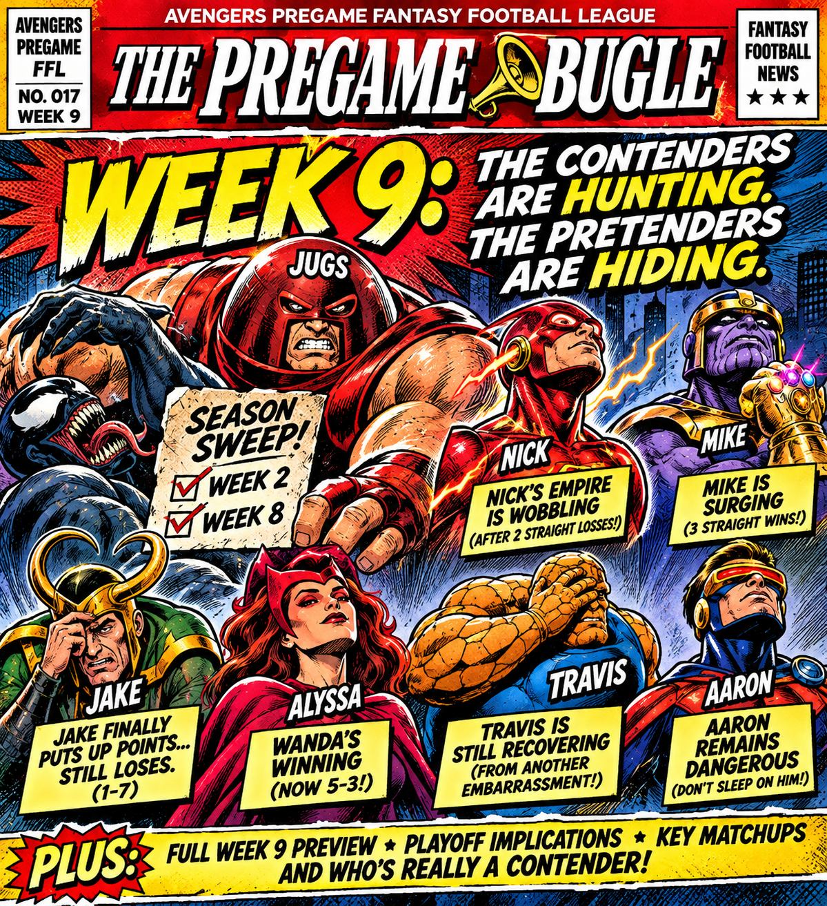

WEDNESDAY MORNING. WAIVERS CLEARED. THURSDAY KICKOFF IS NEXT.
Week 9 starts tomorrow, and the Avengers Pregame playoff race is getting uncomfortable. Dakota and Nick lead at 6–2, Alyssa is hunting at 5–3, Mike and Travis are stuck in the 4–4 traffic jam, and Hunter and Aaron need wins at 3–5. Nobody can fix a bad lineup after the points are already on the board.
WEEK 9 · HEAD-TO-HEAD PREVIEW
Loading actual Week 9 pairings from Sleeper…
THE WEEK 8 RECEIPTS, IN BRIEF.
The Juggernauts swept Hunter after a 156.70–101.38 beating. That's no longer a rivalry; it's a subscription service. Nick lost his second straight after six wins to start the year. Mike won his third straight, while Jake finally scored 148.84 and still lost. Alyssa beat Travis while recovering from surgery. The past is embarrassing; the question now is who fixes it before Thursday.
WEEK 9 WAIVER WIRE FALLOUT: NICK SPENDS $50 ON A DEFENSE.
Nick dropped $50 FAAB on Denver's defense, cutting Pittsburgh's defense to make room. Apparently Flash 23 Blast saw two straight losses and decided the solution was to buy the Broncos' entire defensive department.
DAKOTA BUYS A $25 LOTTERY TICKET. The Juggernauts spent $25 on Chiefs running back E. Johnson, dropping the 49ers defense. Maybe it's a brilliant stash. Maybe it's the most expensive shot in the dark since Nick's defensive shopping spree.
ALYSSA GOES ON A SHOPPING SPREE. Wanda added Kirk Cousins for $15 (dropping Bryce Young), Broncos running back J. Coleman for $5 (dropping Aaron Jones Sr.), and Tyler Allgeier for $4. She also swapped Cincinnati's defense for Jacksonville's in free agency. Nick paid $50 for one defense; Alyssa spent $24 on three waiver additions. Two completely different interpretations of financial planning.
DAKOTA ALSO GOT A KICKER FOR FREE. Cam Little arrived on a $0 waiver claim after Evan McPherson was dropped. Finally, an Avengers Pregame transaction with a price tag that won't require a congressional hearing.
THE WEEK 9 PLAYOFF PRESSURE COOKER.
Dakota and Nick enter the week at 6–2, but they aren't carrying the same momentum. The Juggernauts are coming off another win over Hunter, while Flash 23 Blast is trying to stop a two-game skid. One more loss won't end Nick's season. It will, however, make that $50 Broncos defense purchase look a lot more like an emergency investment.
WANDA IS ONE GOOD WEEK FROM MAKING THE LEADERS SWEAT.
At 5–3, Alyssa is close enough to the 6–2 leaders to turn the race into a real argument. A win keeps her pushing toward the top; a loss gives the middle of the pack an opening. Recovering from surgery apparently wasn't enough adversity, so the league also scheduled a playoff race.
THE 4–4 TRAFFIC JAM: MIKE VS. TRAVIS, AT LEAST IN THE STANDINGS.
Mike has won three straight and looks like a contender arriving late to his own season. Travis has fallen back to .500 and needs a response. They aren't necessarily facing each other this week, but they're fighting over the same valuable territory: separation from the pack. One coach is trending up. The other is trying to remember where he left the brakes.
HUNTER AND AARON CANNOT AFFORD TO COAST.
Both sit at 3–5. A Week 9 win would keep either coach in the hunt; another loss makes the climb steeper. Hunter needs a reset after the Juggernauts' season sweep. Aaron needs to turn respectable scoring into actual wins. Unfortunately, the standings do not accept moral victories as legal tender.
JAKE'S WEEK 9 MISSION: WIN AN ACTUAL GAME.
At 1–7, Jake can still ruin somebody else's week, even if his own season has become an ongoing origin story for a supervillain. His 148.84-point Week 8 loss showed the lineup can compete. Now comes the difficult part: getting more points than the person on the other side.
THE PICK'EM DESK: NO FREE POINTS ON THURSDAY.
Jake held the Pick'em lead after Week 7, even while his fantasy roster was collecting losses. Week 8 totals are in the Bible, but the current overall leader has not been independently verified here. Get your Thursday pick locked in before kickoff. Missing a game is the only prediction guaranteed to be wrong without even trying.
SURVIVOR WATCH: FOUR STILL BREATHING.
After Week 8, Hunter, Mike, Travis and Aaron remain alive. Hunter, Mike and Travis have each used two revives; Aaron has used all three. Dakota, Jake, Alyssa and Nick are eliminated. The remaining coaches need to make their Week 9 selections carefully: one wrong pick can be the difference between surviving and joining the rest of us on the couch.
THREE QUESTIONS BEFORE THURSDAY KICKOFF.
1. Can Nick stop his skid after spending $50 on a defense? 2. Can Alyssa close the gap while Mike keeps winning? 3. Which 3–5 coach stays in the hunt, and which Survivor entry is next to fall?
THE COMMISSIONER'S FINAL WORD
Week 9 is where contenders start separating themselves from the pretenders.
The Jugs are rolling. Nick is wobbling. Mike is surging. Wanda is winning. Aaron is dangerous. Travis is questionable. Hunter is traumatized.
And Jake? Jake is still technically participating.
WELCOME TO WEEK 9. YOUR RECORD IS STARTING TO TELL THE TRUTH.